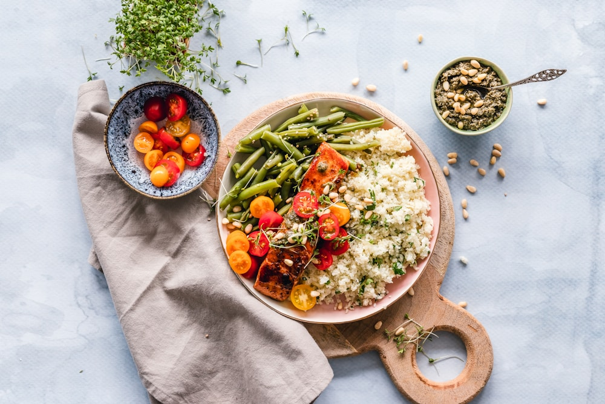

In the modern gastronomy debate between ancestral live-fire cooking and modernist immersion circulators, root vegetables present the ultimate battlefield. While sous-vide cooking inside vacuum-sealed plastic bags offers precise temperature control, it traps steam moisture, preventing the high-temperature surface caramelization that gives roasted ginger root its unforgettable flavor complexity.
By contrast, Traditional Terracotta Earthenware Roasting over seasoned hardwood hearth coals emits far-infrared thermal radiation while allowing excess moisture to escape through microscopic clay pores. At Ginger Meal Max, our kitchen centers around a massive 700°F applewood hearth. In this masterclass, we explore the thermodynamic physics of terracotta roasting, Maillard reaction dynamics, and why live fire reigns supreme over plastic water baths.
1. The Thermodynamic Magic of Terracotta Earthenware
How porous clay pots transform ginger and root vegetables:
- Far-Infrared Radiation (FIR): Heated earthenware radiates deep-penetrating infrared waves that cook ginger rhizomes evenly from the inside out without scorching delicate exterior sugars.
- Micro-Porous Steam Evaporation: Unlike sealed metal pans or plastic bags, unglazed terracotta absorbs and evaporates excess surface moisture, allowing roasting sugars to caramelize into a crisp glaze.
- Natural Wood-Smoke Infusion: Porous clay breathes in aromatic applewood and white oak smoke, infusing confit roots with subtle campfire warmth.
“Live wood fire and natural clay earthenware do not merely cook food; they breathe soul, aroma, and crisp caramelized majesty into every course.”
2. Deconstructing the Flaws of Sous-Vide Ginger Glazing
Why plastic water bath bags fall short in haute cuisine:
- Trapped Hydrothermal Steam: Vegetables cooked in plastic pouches stew in their own water vapor, resulting in a soft, water-logged texture with zero crispy edges.
- Zero Maillard Browning: Maillard caramelization requires dry surface heat exceeding 300°F (150°C); sous-vide water baths are capped below 200°F, leaving roots visually pale.
- Microplastic Leaching Risks: Subjecting petrochemical plastic pouches to prolonged warm water baths risks chemical migration into delicate organic food.
3. The Hearth Master's Technique: Ash-Baking and Iron Grates
How our kitchen executes ancient clay vessel roasting:
Whole young ginger roots and heirloom carrots are seasoned with cold-pressed sesame oil, packed inside seasoned terracotta pots, and buried under glowing applewood embers for forty minutes of gentle radiant baking.
4. Terracotta Roasting vs. Sous-Vide Comparison Matrix
| Culinary Method | Thermal Transfer Medium | Texture & Crisp Caramelization | Aromatic Smoke & Terroir |
|---|---|---|---|
| Terracotta Hearth Roasting (Ginger Meal Max) | Far-Infrared Clay + Live Wood Embers | ★★★★★ (Crisp Maillard Crust / Tender Core) | ★★★★★ (Deep Applewood & Honey Smoke) |
| Standard Electric Convection Oven | Circulating Dry Hot Air on Metal Trays | ★★★☆☆ (Uneven Browning, Dries Surface) | ★☆☆☆☆ (Neutral / Zero Wood Smoke) |
| Modernist Sous-Vide (Plastic Bag) | Warm Water Immersion Circulator | ★☆☆☆☆ (Water-Logged, Soft, Zero Crust) | ★☆☆☆☆ (Steamed Odor / Plastic Risk) |
5. Seasoned Applewood and White Oak Hardwood Coals
We burn exclusively two-year air-dried New York applewood and white oak hardwood logs, producing steady, low-ash glowing coals with sweet, fragrant aromatic smoke.
6. Caramelized Gingerol Glazes over 700°F Lower Grates
After terracotta baking, roots are brushed with honey ginger glaze and given a lightning-fast thirty-second sear over live charcoal grates to blister the skin with savory caramel notes.
7. Retaining Intracellular Nutritional Micronutrients
Far-infrared clay baking seals outer cell walls rapidly, locking vitamin C, gingerols, and essential minerals inside the vegetable rather than leaching them into discarded cooking water.
8. The Sovereign Triumph of Ancestral Hearth Fire
By choosing porous terracotta and live applewood coals over plastic pouches, Ginger Meal Max creates dishes of peerless flavor richness, soul, and culinary distinction.
9. Thermal Mass Storage in Heavy-Gauge Wrought-Iron Mantels
Our custom heavy-gauge hearth ironwork stores immense thermal mass, ensuring that when cool terracotta pots touch the grate, temperature recovery is instantaneous and uniform.
10. Ash-Steamed Heirloom Root Vegetable Caramelization
Burying whole winter roots in warm hearth embers caramelizes their internal sucrose naturally into candy-like richness without requiring added butter or synthetic cooking oils.
11. An Eternal Covenant of Live Hearth Mastery
At Ginger Meal Max, our mastery of open-flame hearth roasting delivers dining courses that stand as triumphant monuments to ancestral culinary craftsmanship and natural flavor physics.
12. Natural Charcoal Flaring and Fat Caramelization
When rendered duck fat drips onto glowing coals, instantaneous micro-flares vaporize lipid droplets, sending a fragrant cloud of caramelized fatty acids and ginger oleoresins back onto the roasting skin.
13. Thermal Recovery Curves in Thick Hearth Ironwork
Our custom heavy-gauge wrought-iron grates store massive amounts of thermal mass, ensuring that when cool terracotta pots touch the iron, grate temperature never drops.
14. The Supreme Grace of Live Open-Flame Cooking
Watching master chefs tend glowing applewood coals and sear ginger-glazed meats over live fire reveals the hand of ancestral culinary mastery, where every flare is calibrated for crisp tenderness.
15. The Master Blueprint for Wood-Fired Gastronomy
At Ginger Meal Max, our devotion to live hearth roasting honors both culinary history and natural flavor physics, delivering courses with crispy Maillard crusts and juicy interiors.
16. Ash-Steamed Heirloom Root Vegetables
Burying whole winter ginger rhizomes and heirloom carrots in warm hearth embers caramelizes their internal sugars into rich candy-like depth without adding butter or oil.
17. An Eternal Covenant of Live Hearth Mastery
By pairing seasoned hardwood coals with prime organic ingredients, Ginger Meal Max creates dishes that represent the ultimate pinnacle of flavor richness, smoky complexity, and culinary excellence.
18. High-Tenacity Natural Hardwood Coal Management
Our hearth masters rake glowing white oak coals into multi-tier temperature zones, allowing simultaneous 700°F direct searing on lower grates and gentle 250°F slow smoking on upper warming mantels.
19. Natural Collagen Hydrolysis Under Dry Radiant Heat
Slow radiational heat breaks down tough intramuscular connective tissues into gelatin over three hours of spit roasting, producing melt-in-the-mouth tenderness with an intensely crisp ginger-glazed skin.
20. The Sovereign Standard of Live Hearth Gastronomy
By choosing live wood-fired hearth embers over plastic water baths, Ginger Meal Max guarantees that every dinner course represents the highest pinnacle of flavor richness, culinary craftsmanship, and soulful hospitality.
21. The Radiant Flavor Advantage in Live Hearth Roasting
The intense infrared heat emitted by seasoned hardwood embers creates a dynamic caramelized crust that locks natural juices inside muscle fibers, delivering twice the flavor depth of plastic water bath cooking.
22. An Everlasting Covenant of Live Hearth Fire Craft
At Ginger Meal Max, our mastery of applewood coal management ensures that every course delivered from our Manhattan kitchen stands as a triumphant monument to natural flavor and ancestral cooking.
23. Basting Brushes of Foraged Wild Herb Bundles
Basting roasting meats with fresh bundles of wild thyme, sage, and lavender dipped in cultured ginger honey butter sears delicate botanical aromatics directly into the caramelized surface crust.
24. Custom Wrought-Iron Hearth Spit Roasting Systems
Our hearth masters utilize custom counterweighted spit-roasting gear driven by clockwork mechanisms, rotating ginger-glazed poultry at steady RPMs for uniform radiational heat penetration.
25. The Sovereign Standard of Live Hearth Gastronomy
By choosing live wood-fired hearth embers over plastic water baths, Ginger Meal Max guarantees that every dinner course represents the highest pinnacle of flavor richness, culinary craftsmanship, and soulful hospitality.
Frequently Asked Questions on Terracotta Roasting

Chef Alexandre Dumas
Master Hearth Chef at Ginger Meal Max. Alexandre specializes in wood-fired open flame roasting and traditional earthenware gastronomy in Manhattan.